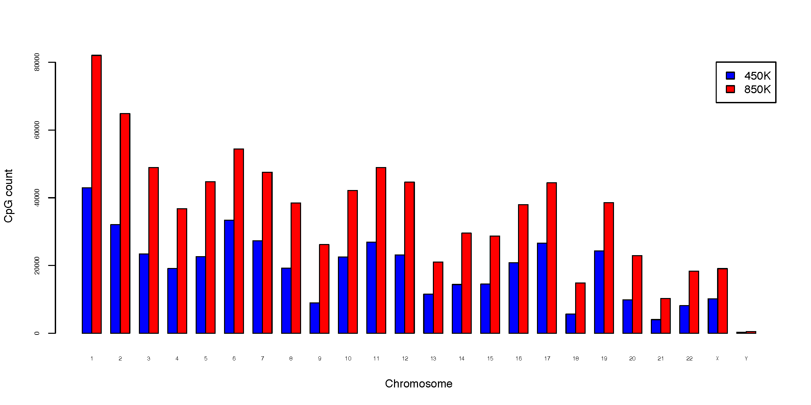
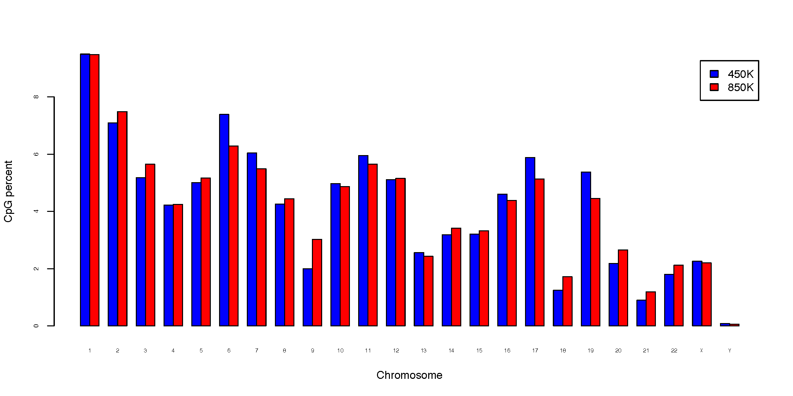
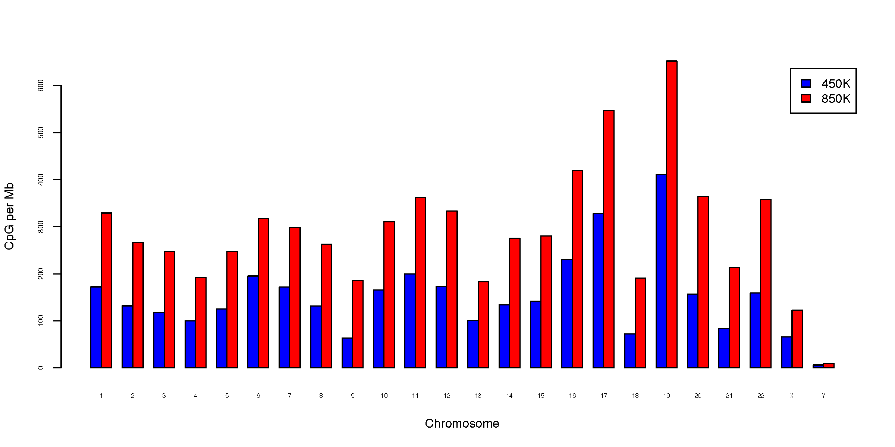

5. CpG_distrb_chrom
5.1. Overview
CpG_distrb_chrom summarizes and visualizes the distribution of CpGs
across chromosomes.
For each input sample, the command reports:
total CpG count per chromosome;
percentage of all counted CpGs assigned to each chromosome; and
CpG density per megabase (Mb).
One or more BED3+ CpG files can be analyzed together. Chromosome inclusion and plotting order are determined by the chromosome-size file.
5.2. Input Files
5.2.1. CpG BED files
Each input file must contain at least three BED columns:
chrom, start, end
Compressed input is supported.
Multiple files may be supplied either as separate arguments:
-i sample1.bed.gz sample2.bed.gz sample3.bed.gz
or as a single comma-separated argument for backward compatibility:
-i sample1.bed.gz,sample2.bed.gz,sample3.bed.gz
Invalid BED records are ignored with a warning.
5.2.2. Chromosome-size file
The chromosome-size file must contain at least two columns:
chromosome and size
Example:
chr1 249250621
chr2 243199373
chr3 198022430
Chromosome order in this file determines the order used in output tables and plots.
Chromosome names must be unique and chromosome sizes must be positive.
5.3. Sample Names
Use -n / --names to provide sample labels. Names may be supplied as
separate arguments:
-n 450K 850K
or as a comma-separated argument:
-n 450K,850K
The number of names must match the number of input files, and sample names must be unique.
If --names is omitted, input filenames are used as sample names.
5.4. Usage
Basic usage:
CpG_distrb_chrom \
-i 450K_probe.hg19.bed3.gz 850K_probe.hg19.bed3.gz \
-n 450K 850K \
-s hg19.chrom.sizes \
-o chromDist
Useful options include:
-s,--chrom_size,--chrom-size– chromosome-size file--format {png,pdf,both}– plot output format (default:pdf)--dpi– PNG resolution (default: 300)--width– plot width in inches (default: 12)--height– plot height in inches (default: 6)--no_plot– write summary tables without generating plots--max_plot_samples– maximum number of samples allowed in grouped bar plots (default: 12); use 0 to disable this limit--strict_chromosomes– stop if an input BED file contains chromosomes absent from the chromosome-size file-o,--out_prefix,--output– output prefix
Display all options with:
CpG_distrb_chrom -h
5.5. Chromosomes Not in the Size File
By default, CpGs on chromosomes absent from the chromosome-size file are ignored with a warning.
Use --strict_chromosomes to treat such chromosomes as an error.
Percentages are calculated using only CpGs assigned to chromosomes present in the chromosome-size file.
5.6. Output
For output prefix chromDist, four summary tables are written:
chromDist.chrom_distribution.tsv– combined count, percentage, and density resultschromDist.chrom_counts.tsv– CpG countschromDist.chrom_percent.tsv– percentage of CpGschromDist.chrom_perMb.tsv– CpG density per Mb
The combined table contains Chromosome and ChromSize followed by three
columns per sample:
<sample>.CpG_count<sample>.CpG_percent<sample>.CpG_perMb
CpG density is calculated as:
5.7. Plots
Unless --no_plot is used, three grouped bar plots are generated:
chromDist.CpG_total.pdf– CpG count by chromosomechromDist.CpG_percent.pdf– percentage of CpGs by chromosomechromDist.CpG_perMb.pdf– CpG density per Mb
With --format png, the corresponding .png files are written.
Use --format both to generate both PDF and PNG files.
By default, plots are skipped when more than 12 samples are supplied. This
limit can be changed with --max_plot_samples.
5.8. Example Data
5.9. Example Figures
Total CpG count per chromosome:
{kind=link}

Percentage of CpGs on each chromosome:
{kind=link}

CpG density per megabase:
{kind=link}
